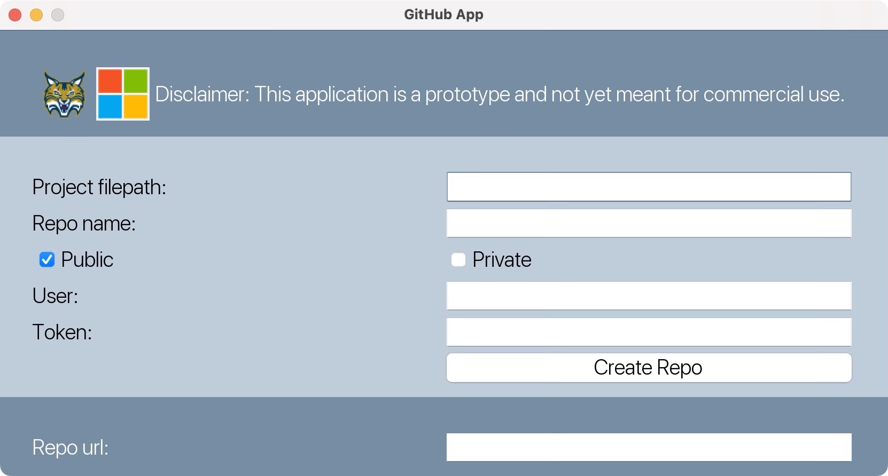

GitHub Repository Creator App
GitHub Repo
Description
This program is a prototype GitHub application that allows the user to create a new repository on GitHub and link it to a local project. The user can input the file path of their local project, the name of the repository, and their GitHub username and token. They can also choose to make the repository public or private. Once the user clicks the "Create Repo" button, the program will create the repository on GitHub and display the repository URL. The user can then click the "Push Initial Commit" button to add and commit the project files to the new repository.
Instructions
- Once the program has been opened, you should see a window titled "GitHub App".
- In the middle section of the window, you'll see a form where you can input some details about your GitHub repository. Here's what each field means:
- Project filepath: This is the filepath of the local project you want to link to the new GitHub repository. You can type or paste the filepath into this field.
- Repo name: This is the name you want to give your new GitHub repository. You can type the name into this field.
- Private/Public: These are radio buttons that allow you to choose whether you want your GitHub repository to be private or public. It will automatically be set to public.
- User: This is the GitHub username you want to associate with the new repository. You can type the username into this field.
- Token: This is the GitHub personal access token you want to use to authenticate with the GitHub API. You can type or paste the token into this field.
- Once you've filled in all the necessary fields, you can click the "Create Repo" button to create the new GitHub repository. If the repository is successfully created, a URL for the new repository will appear in the bottom section of the window and your provided filepath will be pushed as the initial commit.

Collaborators
Ellie Delea
Jacob Hogrefe
Lauren Sloane